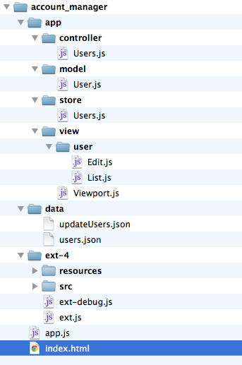
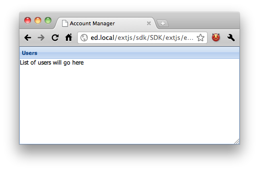
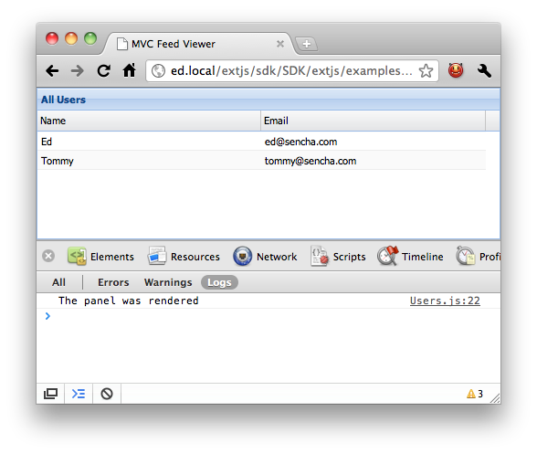

类名只有字母数字，大写开头。命名空间可以有多层，最外层命名空间开头大写。只有Sencha官方发布的可以用Ext作为最外层命名空间。
驼峰风格，不能有连着两个字符大写。
“源代码文件与目录”严格对应“类名与命名空间”。
同类，但以小写开头。
同上。但要注意静态属性以大写开头：
Ext.MessageBox.YES = "Yes" Ext.MessageBox.NO = "No" MyCompany.alien.Math.PI = "4.13"
使用Ext.define定义类：
Ext.define(className, members, onClassCreated);
例子：
Ext.define( 'My.sample.Person', {
name: 'Unknown',
constructor: function(name) {
if (name) {
this.name = name;
}
},
eat: function(foodType) {
alert(this.name + " is eating: " + foodType);
}
});
var aaron = Ext.create('My.sample.Person', 'Aaron');
aaron.eat("Salad"); // alert("Aaron is eating: Salad");
上面用Ext.create方法创建实例，而不推荐用new My.sample.Person()。Ext.create是动态加载的实例。第一个参数是类名，后面的参数给类的构造函数。
config成员通过Ext.Class的预处理器在类被创建前初始化：
config成员和类的其他成员放在一起。
config成员会在类创建期间自动生成没有被显式定义的getter/setter与相关方法。
config成员自动生成apply方法。在自动生成的setter方法设值前加入处理逻辑。
例子：
Ext.define('My.own.Window', {
/** @readonly */
isWindow: true,
config: {
title: 'Title Here',
bottomBar: {
enabled: true,
height: 50,
resizable: false
}
},
constructor: function(config) {
this.initConfig(config);
},
applyTitle: function(title) {
if (!Ext.isString(title) || title.length === 0) {
alert('Error: Title must be a valid non-empty string');
}
else {
return title;
}
},
applyBottomBar: function(bottomBar) {
if (bottomBar && bottomBar.enabled) {
if (!this.bottomBar) {
return Ext.create('My.own.WindowBottomBar', bottomBar);
}
else {
this.bottomBar.setConfig(bottomBar);
}
}
}
});
调用方法：
var myWindow = Ext.create('My.own.Window', {
title: 'Hello World',
bottomBar: {
height: 60
}
});
alert(myWindow.getTitle()); // alerts "Hello World"
myWindow.setTitle('Something New');
alert(myWindow.getTitle()); // alerts "Something New"
myWindow.setTitle(null); // alerts "Error: Title must be a valid non-empty string"
myWindow.setBottomBar({ height: 100 }); // Bottom bar's height is changed to 100
定义静态成员：
Ext.define('Computer', {
statics: {
instanceCount: 0,
factory: function(brand) {
// 'this' in static methods refer to the class itself
return new this({brand: brand});
}
},
config: {
brand: null
},
constructor: function(config) {
this.initConfig(config);
// the 'self' property of an instance refers to its class
this.self.instanceCount ++;
}
});
var dellComputer = Computer.factory('Dell');
var appleComputer = Computer.factory('Mac');
alert(appleComputer.getBrand()); // using the auto-generated getter to get the value of a config property. Alerts "Mac"
alert(Computer.instanceCount); // Alerts "2"
抛异常时使用Ext.getDisplayName()取得任何方法的显示名。
throw new Error('['+ Ext.getDisplayName(arguments.callee) +'] Some message here');
任何由Ext.define()定义的类型抛出异常可以看到类名与方法名。
username和password。
Ext.application({
requires : [ 'Ext.container.Viewport' ],
name : 'AM',
appFolder : 'app',
launch : function() {
Ext.create('Ext.container.Viewport', {
layout : 'fit',
items : [ {
xtype : 'panel',
title : 'Users',
html : 'List of users will go here'
} ]
});
}
});
上面建立一个Ext.application实例，指定名称为AM。这个AM会自动成为全局变量， 注册命名空间到Ext.Loader对应appFolder指定的路径app。launch指定的回调方法创建了一个Viewport实例。里面有一个占满整个屏幕的Panel。

控制器监听事件并调用对应的动作。
Ext.define('AM.controller.Users', {
extend : 'Ext.app.Controller',
init : function() {
console.log('Initialized Users! This happens '
+ 'before the Application launch function is called');
}
});
把上面的控制器加到application中去：
Ext.application({
...
controllers: [ 'Users' ],
...
});
这样页面加载时控制器被调用，在浏览器控制台输出：
Initialized Users! This happens before the Application launch function is called
控制器还有一个control方法可以监听视图上的控件。下面的例子中我们在初始化方法里指定监听页面上viewport里的panel的渲染事件：
Ext.define('AM.controller.Users', {
extend : 'Ext.app.Controller',
init : function() {
this.control({
'viewport > panel' : {
render : this.onPanelRendered
}
});
},
onPanelRendered : function() {
console.log('The panel was rendered');
}
});
控制台输出：
The panel was rendered
注意指定监听对象的格式和css选择器很像。'viewport > panel'表示“所有直接属于viewport的panel”。详细规则查看文档目录下的：
docs/index.html#!/api/Ext.ComponentQuery
一个查询结果的列表视图：
Ext.define('AM.view.user.List', {
extend : 'Ext.grid.Panel',
alias : 'widget.userlist',
title : 'All Users',
initComponent : function() {
this.store = {
fields : [ 'name', 'email' ],
data : [
{ name : 'Ed', email : 'ed@sencha.com' },
{ name : 'Tommy', email : 'tommy@sencha.com' }
]
};
this.columns = [
{ header : 'Name', dataIndex : 'name', flex : 1 },
{ header : 'Email', dataIndex : 'email', flex : 1 }
];
this.callParent(arguments);
}
})
上面的视图类型是AM.view.user.List，别名是widget.userlist：
在控制器里根据类型AM.view.user.List加上视图：
Ext.define('AM.controller.Users', {
extend: 'Ext.app.Controller',
views: [ 'user.List' ],
init: ...
onPanelRendered: ...
});
把原来application里Viewport里的panel换成我们的视图userList（根据别名）：
Ext.application({
...
launch : function() {
Ext.create('Ext.container.Viewport', {
layout: 'fit',
items: { xtype: 'userlist' }
});
}
});

注意onPanelRander还是被会调用，因为grid类还是panel的子类可以匹配viewport > panel选择器。
再给表格里的行添加双击事件，可以弹出对应记录编辑框：
Ext.define('AM.controller.Users', {
...
editUser : function(grid, record) {
console.log('Double clicked on ' + record.get('name'));
},
init : function() {
...
this.control({
'userlist' : {
itemdblclick : this.editUser
}
});
}
});
现在双击后能在控制抬输出信息。接下来要给编辑框做个视图：
Ext.define('AM.view.user.Edit', {
extend : 'Ext.window.Window',
alias : 'widget.useredit',
title : 'Edit User',
layout : 'fit',
autoShow : true,
initComponent : function() {
this.items = [ {
xtype : 'form',
items : [ {
xtype : 'textfield',
name : 'name',
fieldLabel : 'Name'
}, {
xtype : 'textfield',
name : 'email',
fieldLabel : 'Email'
} ]
} ];
this.buttons = [ {
text : 'Save',
action : 'save'
}, {
text : 'Cancel',
scope : this,
handler : this.close
} ];
this.callParent(arguments);
}
});
别忘记有了新视图要加到controller里，对应的事件里再弹出编辑框：
Ext.define('AM.controller.Users', {
extend: 'Ext.app.Controller',
views: [
'user.List',
'user.Edit'
],
init: ...
editUser: function(grid, record) {
var view = Ext.widget('useredit');
view.down('form').loadRecord(record);
}
});
目前的版本记录都是硬编码在视图里的，现在改成根据通过专门的模块读取的：
Ext.define('AM.store.Users', {
extend : 'Ext.data.Store',
fields : [ 'name', 'email' ],
data : [
{ name : 'Ed', email : 'ed@sencha.com' },
{ name : 'Tommy', email : 'tommy@sencha.com' }
]
});
修改控制器添加stores模块把读取记录的源代码包含进来：
Ext.define('AM.controller.Users', {
extend: 'Ext.app.Controller',
stores: [ 'Users' ],
...
});
去掉视图里的硬编码记录：
Ext.define('AM.view.user.List' ,{
extend: 'Ext.grid.Panel',
alias: 'widget.userlist',
title: 'All Users',
// we no longer define the Users store in the `initComponent` method
store: 'Users',
initComponent: function() {
this.columns = [
...
});
到目前为止我们已经把数据集合和程序分开了。但是还有可以改进的地方，因为每第记录里有哪些字段是定义在结果集里的。我们再把每个记录的结构抽象出来作为model：
Ext.define('AM.model.User', {
extend : 'Ext.data.Model',
fields : [ 'name', 'email' ]
});
把原来store里声明列名的地方用model代替：
Ext.define('AM.store.Users', {
extend: 'Ext.data.Store',
model: 'AM.model.User',
data: [
{name: 'Ed', email: 'ed@sencha.com'},
{name: 'Tommy', email: 'tommy@sencha.com'}
]
});
Controller里指定model：
Ext.define('AM.controller.Users', {
extend: 'Ext.app.Controller',
stores: ['Users'],
models: ['User'],
...
});
controller里给保存按钮加上事件：
Ext.define('AM.controller.Users', {
...
init: function() {
this.control({
'viewport > userlist': {
itemdblclick: this.editUser
},
'useredit button[action=save]': {
click: this.updateUser
}
});
},
...
updateUser: function(button) {
console.log('clicked the Save button');
}
...
});
把硬编码在Store里的记录改成通过proxy从服务器上读取，注意加上autoLoad让它自动读取：
Ext.define('AM.store.Users', {
extend: 'Ext.data.Store',
model: 'AM.model.User',
autoLoad: true,
proxy: {
type: 'ajax',
url: 'data/users.json',
reader: {
type: 'json',
root: 'users',
successProperty: 'success'
}
}
});
服务器端的程序就不写了，用个静态文件代替响应：
{
"success": true,
"users": [
{"id": 1, "name": 'Ed', "email": "ed@sencha.com"},
{"id": 2, "name": 'Tommy', "email": "tommy@sencha.com"}
]
}
提交函数中调用Store的Sync()方法：
updateUser: function(button) {
var win = button.up('window'),
form = win.down('form'),
record = form.getRecord(),
values = form.getValues();
record.set(values);
win.close();
// synchronize the store after editing the record
this.getUsersStore().sync();
}
更新Store中的proxy，为读写方法指定不同的接口：
proxy : {
type : 'ajax',
api : {
read : 'data/users.json',
update : 'data/updateUsers.json'
},
reader : {
type : 'json',
root : 'users',
successProperty : 'success'
}
}